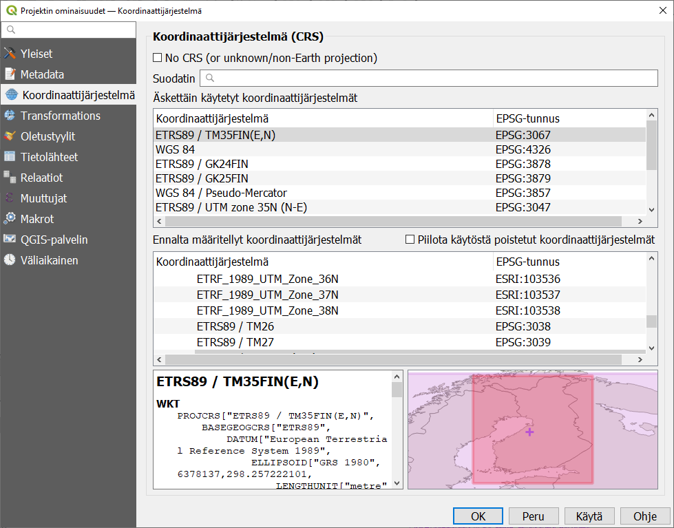
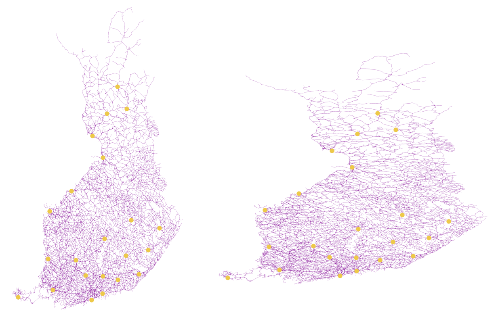
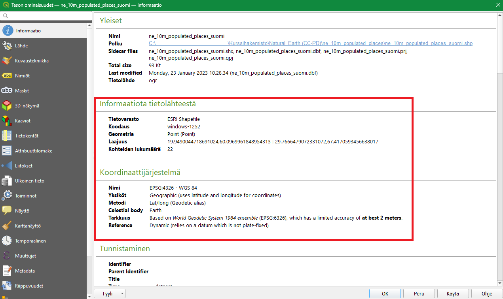
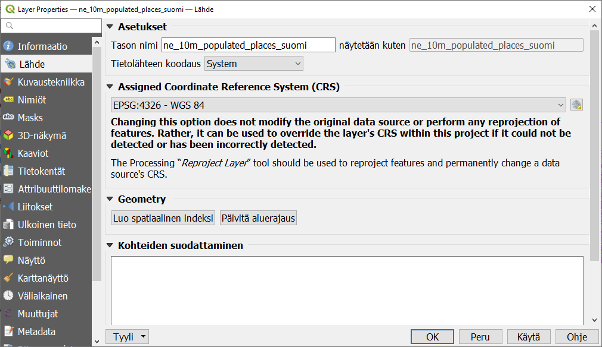
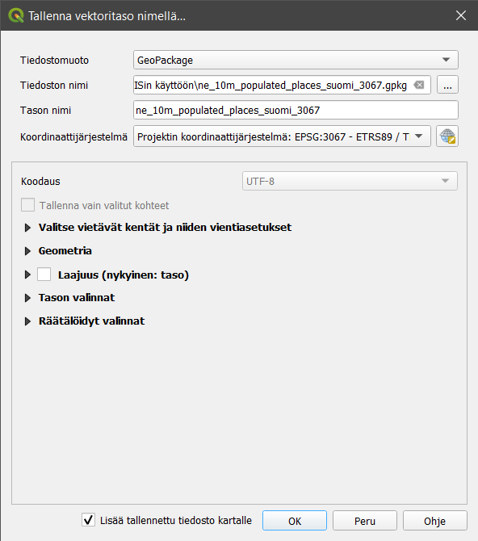

5 Harjoitus 4: Koordinaattijärjestelmät
Harjoituksen sisältö
Harjoituksessa tutustutaan koordinaattijärjestelmien määrittelyyn QGISissä.
Harjoituksen tavoite
Harjoituksen jälkeen koulutettava osaa määrittää koordinaattijärjestelmän niin kokonaiselle projektille kuin yksittäiselle paikkatietoaineistollekin.
Arvioitu kesto
30 minuuttia.
Valmistautuminen
Avaa uusi QGIS-projekti (Projekti > Uusi) ja tallenna se nimellä “QGIS-harjoitus 4”. Lisää projektiin seuraavat aineistot:
- ..kurssihakemisto/MML/YK_1M/TieViiva.shp
- ..kurssihakemisto/Natural_Earth/ne_10m_populated_places/ne_10m_populated_places_suomi.shp
Psst! Paikkatietoaineistolla pitäisi aina olla asetettuna jokin koordinaattijärjestelmä!
5.1 Projektin koordinaattijärjestelmä
Paikkatietoaineistoja tuotetaan jatkuvasti erilaisiin koordinaattijärjestelmiin, mikä voi tehdä erilaisten aineistojen yhtäaikaisesta tarkastelusta samassa karttaikkunassa haastavaa. QGIS ratkaisee tämän ongelman projektin koordinaattijärjestelmän avulla: kaikki projektiin avatut paikkatietoaineistot projisoidaan “lennossa” projektin koordinaattijärjestelmään, vaikka yksittäisillä aineistoilla olisi todellisuudessa eri koordinaattijärjestelmät. Toisin sanoen, eri koordinaattijärjestelmässä olevien aineistojen koordinaatit lasketaan ”lennossa” projektin koordinaattijärjestelmää vastaaviksi (englannin kielen lyhenne on OTF - on the fly).
Huomaa, että ”lennossa”-ilmaisulla tarkoitetaan sitä, että paikkatietoaineisto piirtyy tilapäisesti projektin koordinaattijärjestelmään ilman, että sen alkuperäinen koordinaattijärjestelmä muuttuu. Tällä tavoin mahdollistetaan aineistojen piirtäminen ja visualisointi yhdessä. Avaa nyt päävalikosta Projekti > Ominaisuudet… ja valitse vasemmasta palkista Koordinaattijärjestelmä. Pääset projektin koordinaattijärjestelmän asetuksiin myös klikkaamalla QGIS-työtilan oikeassa alareunassa olevaa EPSG-painiketta  .
.

Projektin koordinaattijärjestelmä näkyy Äskettäin käytetyt koordinaattijärjestelmät -listauksessa ensimmäisenä: ETRS89/TM35FIN (EPSG: 3067). QGIS määrittelee projektin koordinaattijärjestelmän automaattisesti ensimmäiseksi lisätyn paikkatietoaineiston perusteella. Projektiin lisättiin ensimmäisenä Maanmittauslaitoksen TieViiva-aineiston, jonka koordinaattijärjestelmä on ETRS89/TM35FIN (EPSG:3067) – näin ollen QGIS asetti sen koko projektin koordinaattijärjestelmäksi.

Vaihda (= uudelleenprojisoi lennossa) projektin koordinaattijärjestelmäksi WGS 84 (EPSG: 4326) ja paina OK. Löydät halutun koordinaattijärjestelmän helpoiten kirjoittamalla EPSG-koodin Suodatin-kenttään.

Koordinaattijärjestelmän muuttamisen jälkeen klikkaa Zoomaa täydeksi -työkalua  , niin paikkatietoaineistot keskittyvät karttaikkunaan. Voit huomata, että paikkatietoaineistomme ovat nyt uudelleenprojisoituneet lennossa WGS 84 -koordinaattijärjestelmään ja samalla Suomi on vääristynyt muodoltaan.
, niin paikkatietoaineistot keskittyvät karttaikkunaan. Voit huomata, että paikkatietoaineistomme ovat nyt uudelleenprojisoituneet lennossa WGS 84 -koordinaattijärjestelmään ja samalla Suomi on vääristynyt muodoltaan.

Vie hiiresi Helsingin kohdalle ja tarkastele alapalkin Koordinaatit-kenttää. Koordinaatit näyttävät jokseenkin tältä:

Vaihda nyt projektin koordinaattijärjestelmä takaisin ETRS89/TM35FIN-koordinaattijärjestelmään. Vie hiiresi uudestaan Helsingin kohdalle ja tarkastele Koordinaatit-kenttää.

Voit huomata, että koordinaattien suuruusluokka on hyvin erilainen. Tämä johtuu siitä, että koordinaattijärjestelmät käyttävät eri mittayksiköitä. ETRS89/TM35FIN-koordinaattijärjestelmän yksiköt ovat metrejä (itä ja pohjoinen / x ja y), kun taas WGS 84 -koordinaattijärjestelmässä koordinaatit ovat asteina (pituus ja leveys). ETRS89/TM35FIN-koordinaattijärjestelmässä on määritetty origo eli piste, jonka koordinaatit ovat (0, 0). WGS 84-koordinaattijärjestelmässä tuo piste sijaitsee päiväntasaajalla UTM-kaistalla 35. UTM on maailmanlaajuisesti käytössä oleva projektio, joka jakaa maapallon 6° leveisiin kaistoihin. Kaista UTM01 sijaitsee Alaskan länsipuolella. Koska koordinaattijärjestelmien arvoja voidaan ilmentää sekä metreinä että asteina, niiden koordinaattiarvoja ei voida suoraan vertailla toisiinsa. Koordinaatit tulee uudelleenprojisoida yhteiseen koordinaattijärjestelmään.
5.2 Paikkatietoaineiston koordinaattijärjestelmä
Tarkastele nyt tason ne_10m_populated_places_suomi koordinaattijärjestelmää klikkaamalla tasoa hiiren oikealla painikkeella Tasot-paneelissa ja valitsemalla Ominaisuudet…. QGISiin avautuu Tason ominaisuudet -ikkuna, josta löytyy paljon tietoa kyseisestä paikkatietoaineistosta. Informaatio-välilehdeltä löydät tietoa mm. paikkatietoaineiston koodauksesta, geometriatyypistä, koordinaattijärjestelmästä ja kohteiden lukumäärästä. Huomaa, että tämän kyseisen tason koordinaattijärjestelmä on todellisuudessa eri kuin TieViiva-aineiston tai projektin koordinaattijärjestelmä. Silti QGIS esittää aineiston karttaikkunassa ETRS89/TM35FIN-koordinaattijärjestelmässä, sillä projektin koordinaattijärjestelmä on dominoiva.

Avaa seuraavaksi Tason ominaisuudet -ikkunan vasemmasta palkista Lähde-välilehti. Huomaa, että voisit vaihtaa järjestelmää Koordinaattijärjestelmä-alasvetolaatikon avulla. Älä kuitenkaan tee sitä nyt. Koordinaattijärjestelmän muuttaminen Lähde-välilehdellä muuttaa vain aineiston koordinaattijärjestelmämääritystä. Aineiston koordinaatit eivät muutu, ja väärällä määrityksellä aineisto ei piirry oikeaan paikkaan. Jos haluaisit muuttaa aineiston koordinaattijärjestelmää, aineisto tulee uudelleenprojisoida eli sen koordinaatit on laskettava uudelleen. Sulje Tason ominaisuudet -ikkuna klikkaamalla OK.

5.3 Paikkatietoaineiston uudelleenprojisointi
Toisinaan on tärkeää, että paikkatietoaineistot ovat samassa koordinaattijärjestelmässä – esimerkiksi osa QGISin prosessointityökaluista ei tuota oikeaa tulosta jos lähtöaineistot ovat keskenään eri koordinaattijärjestelmissä. Näin ollen paikkatietoaineisto on uudelleenprojisoitava ja tallennettava uutena paikkatietoaineistona. Uudelleenprojisoidaan nyt ne_10m_populated_places_suomi-taso WGS 84 -koordinaattijärjestelmästä ETRS89/TM35FIN-koordinaattijärjestelmään.
5.3.1 Tapa 1: Projisoi taso -prosessityökalu
Uudelleenprojisoinnin voi tehdä suoraan QGIS-prosessointityökalun avulla valitsemalla ylävalikosta Vektori > Tiedonhallinta > Projisoi taso… Aseta syötetasoksi ne_10m_populated_places_suomi ja valitse halutuksi koordinaattijärjestelmäksi ETRS89/TM35FIN (EPSG: 3067). Klikkaa Projisoitu- kentän kohdalla … > Tallenna tiedostoon ja valitse sijainti, minne haluat tallentaa uudelleenprojisoidun aineiston. Anna tasolle nimeksi ne_10m_populated_places_suomi_3067 ja tarkista, että aineisto tallentuu GeoPackage-formaattiin. Klikkaa lopuksi Suorita.

QGISin Tasot-paneeliin ilmestyy uudelleenprojisoitu paikkatietoaineisto. Voit tarkistaa koordinaattijärjestelmän tason ominaisuuksista.
5.3.2 Tapa 2: Tallennus Tasot-paneelissa
Klikkaa tasoa Tasot-paneelissa hiiren oikealla painikkeella ja valitse Vie > Tallenna kohteet nimellä… Tällä työkalulla voit tallentaa paikkatietoaineiston uudella nimellä ja samanaikaisesti suorittaa niille erilaisia toimenpiteitä. Voisit esimerkiksi vaihtaa tiedostomuodon ja/tai tallentaa vain valitsemasi osan aineistosta.

Vaihdetaan ensin tiedostomuoto Shape-tiedostostaGeoPackageen. Valitse tämän jälkeen Tiedoston nimi -kohdassa uudelleenprojisoidun aineiston sijainti ja anna sille nimeksi ne_10m_populated_places_suomi_3067. Aseta koordinaattijärjestelmäksi ETRS89/TM35FIN (EPSG: 3067) ja rastita Lisää tallennettu tiedosto kartalle. Paina sitten OK.

QGISin Tasot-paneeliin ilmestyy uudelleenprojisoitu paikkatietoaineisto. Voit tarkistaa koordinaattijärjestelmän tason ominaisuuksista.
Kun olet valmis, tallenna projektitiedosto kurssihakemistoon pikanäppäimellä CTRL + T tai päävalikosta Projekti > Tallenna.
Psst! Koulutuksen jälkeen saat henkilökohtaista tukea Gispon tukipalvelusta. Lähetä kysymyksesi tai kommenttisi osoitteeseen tuki@gispo.fi!